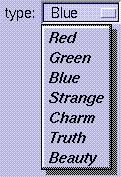

Fl_Menu_ | +----Fl_Choice
#include <FL/Fl_Choice.H>
The only difference between this and a Fl_Menu_Button is that the name of the most recent chosen menu item is displayed inside the box, while the label is displayed outside the box. However, since the use of this is most often to control a single variable rather than do individual callbacks, some of the Fl_Menu_Button methods are redescribed here in those terms.
When the user picks an item off the menu the value() is set to that item and then the item's callback is done with the menu_button as the Fl_Widget* argument. If the item does not have a callback the menu_button's callback is done instead.
All three mouse buttons pop up the menu. The Forms behavior of the first two buttons to increment/decrement the choice is not implemented. This could be added with a subclass, however.
The menu will also pop up in response to shortcuts indicated by putting a '&' character in the label(). See Fl_Button for a description of this.
Typing the shortcut() of any of the items will do exactly the same as when you pick the item with the mouse. The '&' character in item names are only looked at when the menu is popped up, however.

The constructor sets menu() to NULL. See Fl_Menu_ for the methods to set or change the menu.